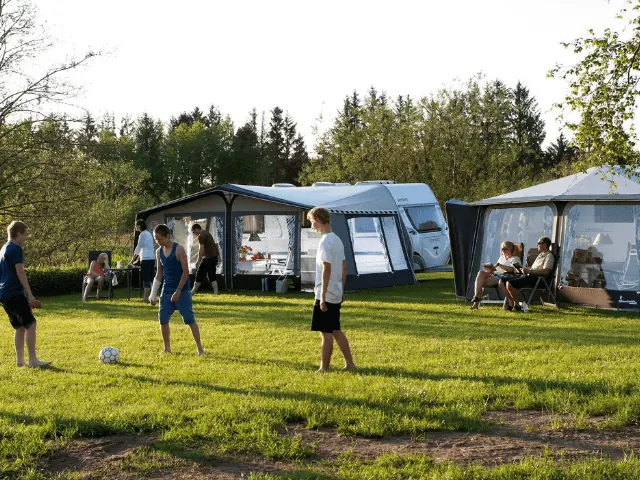
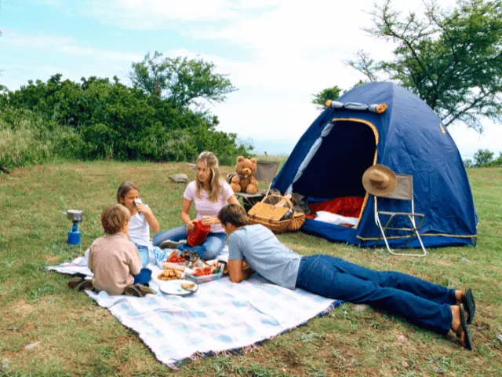
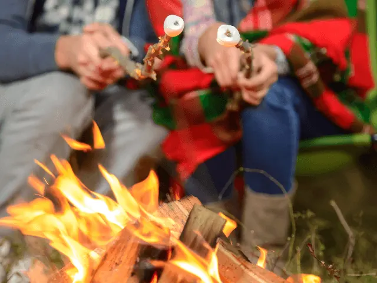
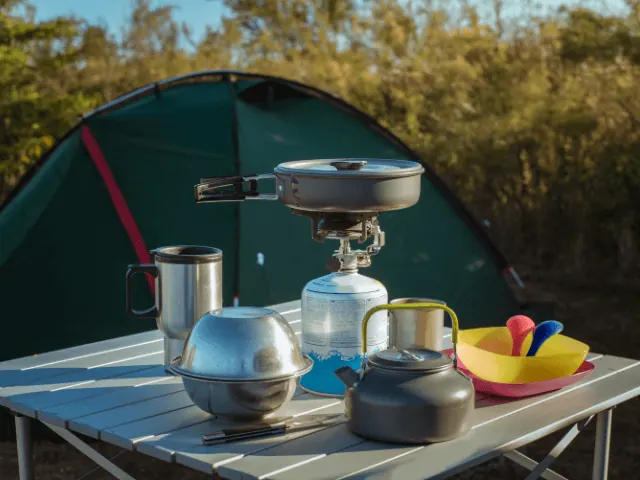
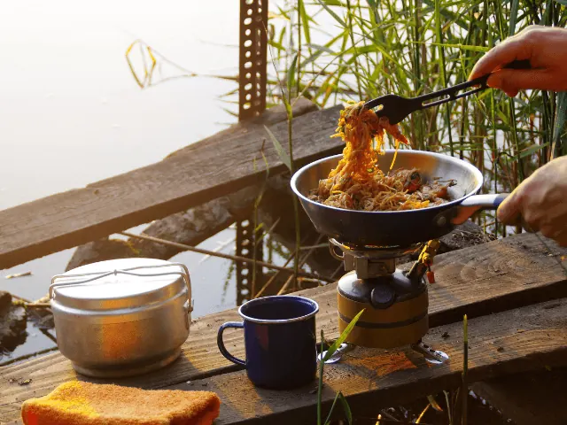

Campings rond Nijmegen
Gepubliceerd op 2 december 2022, bijgewerkt op 20 februari 2024
Onderdeel van de gids Overnachten in Nijmegen, Campings in Nijmegen en Nijmeegse Vierdaagse

Ben jij een echte kampeerliefhebber? Kom dan eens kijken in en rondom Nijmegen. Zeker weten dat je daar op één van de vele campings een heerlijk plekje kunt vinden voor jouw camper, caravan, vouwwagen of tent. Je hoeft niet altijd ver om het ultieme vakantiegevoel te ervaren. Juist in ons eigen land is er nog zoveel te ontdekken. En dat kan absoluut in en rondom Nijmegen. Heerlijk toch? Geen lange autorit, niet uren in de file en je kunt gewoon je eigen taal spreken. In dit artikel nemen wij je graag mee langs de leukste campings van Nijmegen en omstreken. Er is voor iedereen wat te vinden, dus jouw volgende bestemming kun je vandaag alvast boeken 😉

Camping Nijmegen Vierdaagse
Wie Nijmegen zegt, denkt natuurlijk meteen aan de Vierdaagse. Het grootste wandelevenement van Nederland, welke ieder jaar in juli plaatsvindt. Hotels, pensions en B&B’s stromen snel vol. Heerlijk dus als jij een eigen kampeermiddel hebt. Wandel je mee? Of ben je toeschouwer? Reserveer jouw plaats op de sfeervolle Vierdaagsecamping die is voorzien van alle gemakken. De ligging is ideaal, want op slechts 20 minuten fietsen vind je al de start en finish. En heb je een massage of blessurebehandeling nodig? Geen probleem; dit kan gewoon op de camping.
Camping omgeving Nijmegen met binnenzwembad
Ga je met kinderen op vakantie? Dan wil je natuurlijk dat zij zich lekker kunnen vermaken. Het is en blijft een cliché, maar zo waar: Als je kinderen het naar hun zin hebben, heb jij dat ook. Er zijn voldoende campings in de omgeving van Nijmegen met een binnenzwembad. Wel zo fijn als je in Nederland op vakantie gaat. Bij een dag met wat minder weer is het natuurlijk heerlijk om gebruik te maken van het binnenzwembad op de camping. En willen je kinderen non-stop zwemmen, maar jij niet? Dan is het toch wel heel prettig dat de stad Nijmegen binnen handbereik ligt. Heerlijk even een terrasje pakken of een mooi museum bezichtigen.

Kleine camping Nijmegen
Niet iedereen houdt van grote groepen mensen op een camping. Van veel vertier of veel voorzieningen. Het hart van de basic kampeerder gaat juist sneller kloppen van een kleine camping. In een straal van maximaal 20 kilometer rondom Nijmegen zijn tal van kleine campings, SVR of Vekabo campings te vinden. Campings voor de echte natuurliefhebber. Of je nou van fietsen of wandelen houdt, je kunt echt alle kanten op bij de kleine campings in en rondom Nijmegen. Je vindt er uitgestrekte bossen, glooiende heidevelden en stille vennetjes. Je zult je echt verbazen over de schoonheid van de natuur in deze omgeving.

Studenten camping Nijmegen
Nijmegen is dé studentenstad van Nederland. Voor studenten heeft het ontzettend veel te bieden. Een breed aanbod van hogescholen en universiteiten en genoeg keuze om je bij een toffe studentenvereniging aan te sluiten. Daarnaast zijn er leuke locaties en is er altijd wel een bijbaantje te vinden. Er is echter één opkomend probleem; de kamernood. Lang niet iedereen kan een kamer vinden en wat moet je dan? Je zult maar in Noord-Holland wonen en gaan studeren in Nijmegen. Steeds meer studenten wijken dan ook uit naar een studentencamping. Het zal af en toe wat behelpen zijn, maar zeg nou zelf: Is het niet cool dat jouw eerste kamer een vouwwagen of oude caravan is?
Campings bij Nijmegen aan de Waal
Als je van water en boten houdt, moet je echt eens gekampeerd hebben aan de Waal bij Nijmegen. Fantastisch om iedere ochtend neer te strijken op een stoel voor je tent of caravan en te genieten van een schitterend uitzicht over de rivier en de scheepvaart. Geen dag is hetzelfde en je zult merken dat het water heel rustgevend is. Er zijn voldoende campings rondom de Waal te vinden en bekijk vooral goed of je een plekje direct aan het water kunt bemachtigen. Op hete zomerdagen kan het heel aantrekkelijk zijn om te zwemmen in de Waal. Maar pas daar wel mee op! De Waal wordt nog weleens de gevaarlijkste rivier van Nederland genoemd. Als je dus gaat zwemmen, doe dat dan bij een strandje. Ga niet voorbij de grenzen van de baai en zorg dat waar je zwemt je ook kunt staan.

Wintercamping Nijmegen
Voor de onverschrokken kampeerliefhebber vormen guur weer en lage temperaturen geen enkel obstakel. Dankzij de hedendaagse campers en caravans, die voorzien zijn van alle gemakken, kun je zelfs in een eenvoudige setting genieten van de warmte van een kachel. Winterkamperen is dus zeker een mogelijkheid en in Nijmegen helemaal een aanrader. De natuurlijke omgeving transformeert in de koudere maanden in een heel ander, maar even betoverend landschap. En als de dagen korter worden, licht Nijmegen op in winterse sferen. Reserveer dus een plek op een wintercamping in of nabij Nijmegen en maak de Nijmeegse Winterweken mee. De binnenstad is dan omgetoverd met sfeervolle kerstverlichting, en je zult versteld staan van de majestueuze lichtsculpturen. Dwaal langs de verlichte paden en laat je verwonderen. Overnachten in Nijmegen tijdens deze periode maakt je winterse kampeeravontuur compleet.
Goedkope camping Nijmegen
Kies je bewust voor een vakantie in Nederland vanwege je budget? Ga dan kamperen in de provincie Gelderland. Een uniek stukje Nederland met prachtige natuurgebieden, cultuur en historie. Hier kun je ook met een kleine portemonnee genieten van het campingleven. Met name het aanbod van goedkope campings in Nijmegen is royaal. Uiteraard zijn deze campings niet voorzien van veel faciliteiten en ontbreekt er ook vaak een restaurant of bistro. Maar vanwege het beperkte budget gaan mensen toch al zelf aan de slag met een campinggaskooktoestel. En dat is toch eigenlijk ook juist de charme van kamperen?!

Tot slot …
Een vakantie op een camping in of rondom Nijmegen is echt een dikke aanrader. Juist vanwege de grote diversiteit is er voor elk wat wils. Geniet je graag van het bruisende stadsleven? Kies dan voor een stadscamping. Of ben je liever één met de natuur en wandel en fiets je graag in de bossen? Bekijk dan de vele boscampings. Uiteraard zijn er voldoende familiecampings, maar ook rustige campings. Na jouw vakantie zul je zeker beamen: ‘Kamperen in Nederland is nog nooit zo leuk geweest!’